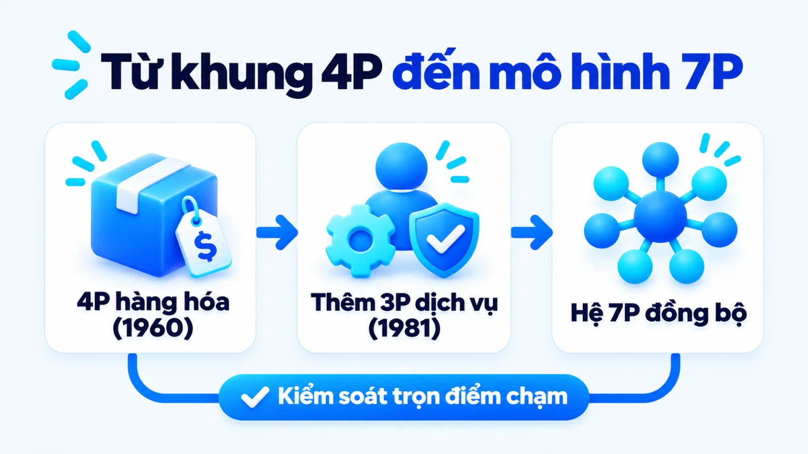
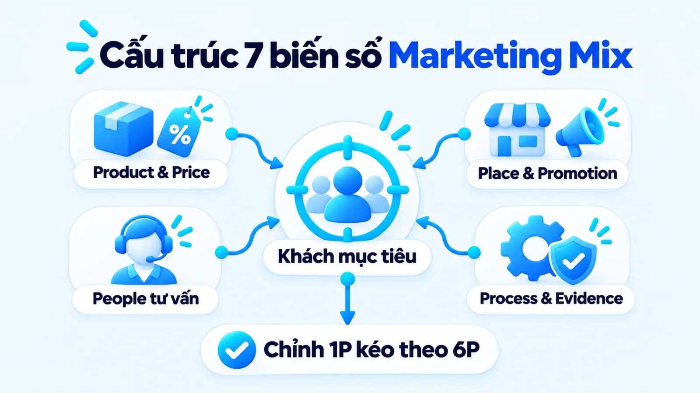
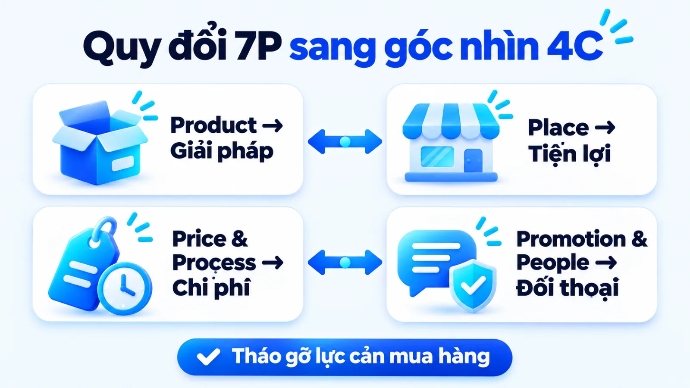
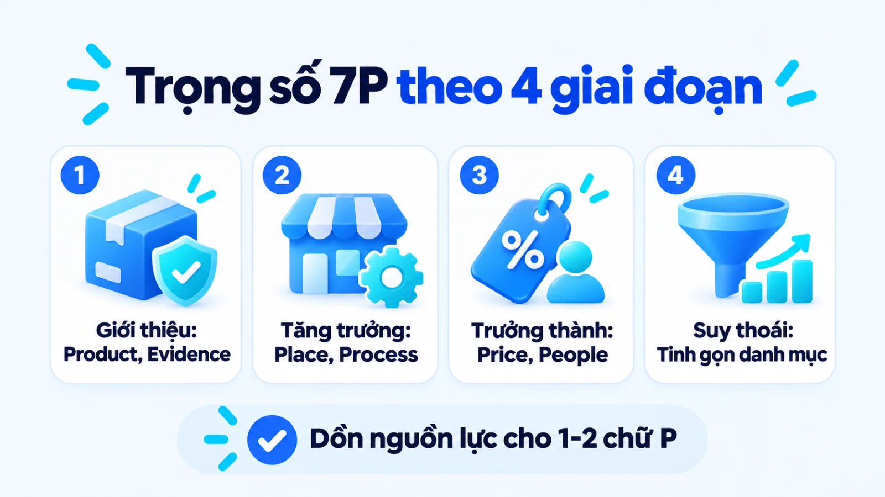
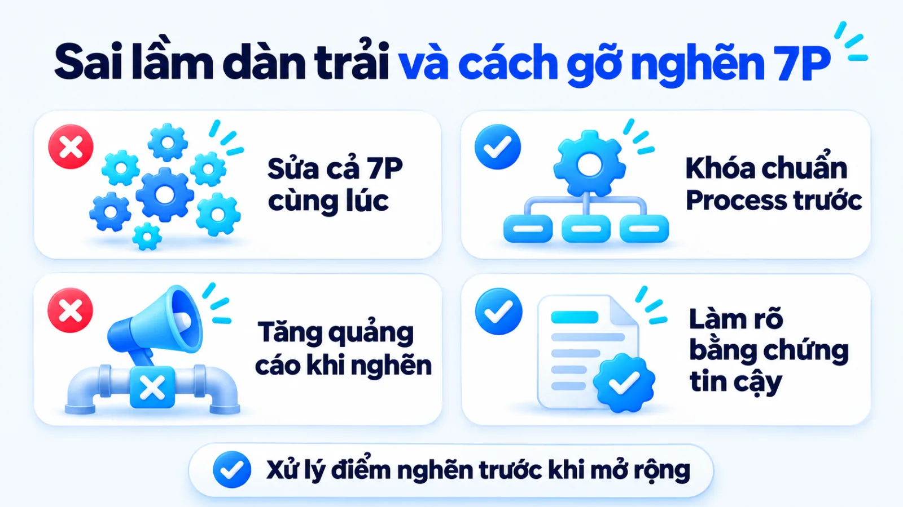
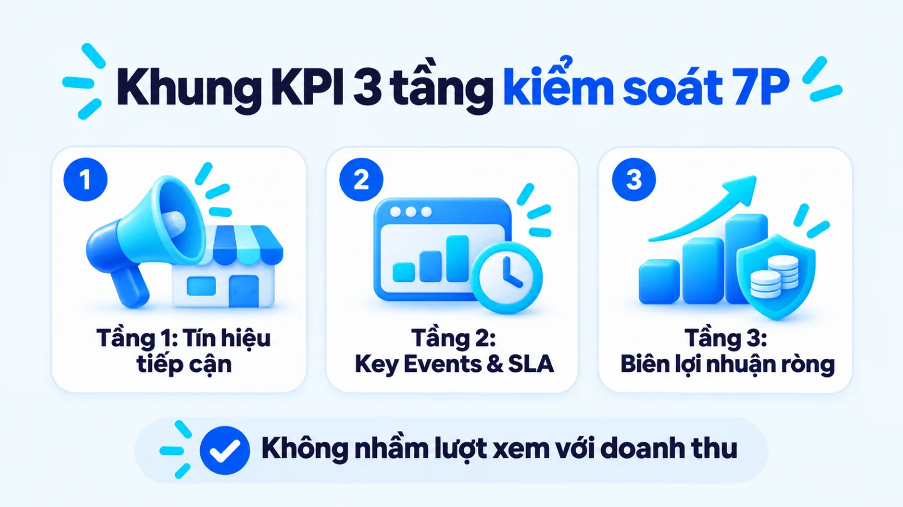

7P trong marketing là gì, đối chiếu 4P và 4C
Tìm hiểu 7P trong marketing là gì chính là nắm bắt mô hình tiếp thị hỗn hợp gồm bảy biến số có thể kiểm soát: sản phẩm, giá cả, kênh phân phối, xúc tiến, con người, quy trình và bằng chứng hữu hình. Với doanh nghiệp vừa và nhỏ, bài toán thực tế không nằm ở việc thuộc lòng tên bảy chữ P mà ở quyết định phân bổ nguồn lực cho biến số nào trước khi ngân sách và nhân sự đều có hạn. Nếu đội ngũ sửa đồng loạt cả bảy yếu tố cùng lúc hoặc tách rời lời hứa quảng cáo khỏi quy trình phục vụ, chi phí thu hút khách hàng sẽ tăng cao trong khi tỷ lệ chuyển đổi thực tế vẫn dậm chân tại chỗ. Tôi là Lê Tuấn Việt, Marketing Leader tại TAKI Group. Trong bài viết này, tôi phân tích cấu trúc vận hành của từng biến số, cách quy đổi sang góc nhìn người mua để tháo gỡ lực cản chuyển đổi và nguyên tắc dịch chuyển trọng số ưu tiên theo từng giai đoạn phát triển sản phẩm.
- Đăng ngày
- Cập nhật

Tóm tắt nhanh
- Mô hình 7P mở rộng khung 4P truyền thống bằng ba biến số People, Process và Physical Evidence nhằm kiểm soát trọn vẹn chất lượng điểm chạm tư vấn và cung ứng dịch vụ.
- Hệ phân loại 4C không phải là phần nối thêm của 7P mà là lăng kính đối xứng giúp doanh nghiệp kiểm tra xem các biến số nội bộ có giải quyết đúng nhu cầu và giảm tổng chi phí cho người mua hay không.
- Thay vì chia đều ngân sách cho cả bảy chữ P, doanh nghiệp vừa và nhỏ cần chọn một đến hai biến số làm mũi nhọn theo bốn giai đoạn vòng đời sản phẩm từ giới thiệu, tăng trưởng, trưởng thành đến suy thoái.
- Hệ thống đo lường hiệu quả 7P phải tách bạch ba tầng dữ liệu gồm tín hiệu tiếp cận, sự kiện chuyển đổi đạt chuẩn trên Google Analytics 4 và biên lợi nhuận thực thu trên hệ thống quản trị.
Mục lục bài viết8 phần
7P trong marketing là gì trong hệ Marketing Mix
7P trong marketing là mô hình tiếp thị hỗn hợp gồm bảy biến số có thể kiểm soát: Product (sản phẩm), Price (giá cả), Place (kênh phân phối), Promotion (xúc tiến), People (con người), Process (quy trình) và Physical Evidence (bằng chứng hữu hình). Khi tìm hiểu 7P trong marketing là gì, người làm nghề cần phối hợp đồng bộ cả bảy thành phần để quản trị hàng hóa lẫn trải nghiệm dịch vụ.
Để hiểu cặn kẽ mô hình 7P vận hành ra sao trong tổng thể chuyên mục Marketing, trước hết cần làm rõ gốc rễ học thuật của khái niệm tiếp thị hỗn hợp. Thay vì nhìn hoạt động bán hàng hay quảng cáo như những mảnh ghép rời rạc, khung lý thuyết này gom toàn bộ công cụ tác động lên thị trường về một bảng điều khiển thống nhất.

Marketing Mix là gì và bước tiến từ 4P lên 7P
Giải đáp câu hỏi marketing mix là gì, chuyên khảo cập nhật năm 2024 của Encyclopædia Britannica định nghĩa đây là tập hợp các biến số tiếp thị có thể kiểm soát mà doanh nghiệp phối hợp nhằm đáp ứng nhu cầu nhóm khách hàng mục tiêu. Theo tổng hợp lịch sử học thuật năm 2024 trên Wikipedia, khung 4P được giáo sư E. Jerome McCarthy hệ thống hóa vào năm 1960 trong sách Basic Marketing: A Managerial Approach.
Khung 4P giải quyết tốt bài toán phân phối hàng hóa hữu hình, nhưng với lĩnh vực dịch vụ và giải pháp có tư vấn, khách hàng không thể cầm nắm sản phẩm trước khi trả tiền. Để lấp khoảng trống ở điểm chạm vận hành, tài liệu tổng hợp năm 2024 về Marketing mix trên Wikipedia ghi nhận vào năm 1981, hai học giả Bernard H. Booms và Mary Jo Bitner đã mở rộng 4P thành 7P bằng việc bổ sung People, Process và Physical Evidence.
Điểm tôi luôn lưu ý khi làm việc với các đội ngũ SME (doanh nghiệp vừa và nhỏ) là không nên hiểu 7P như bảy danh mục đầu việc độc lập giao cho các bộ phận tự làm. Bản chất của mô hình là bảy biến số phụ thuộc lẫn nhau trong cùng một bài toán nguồn lực: thay đổi định vị giá hay sản phẩm bắt buộc kéo theo điều chỉnh tương ứng ở quy trình phục vụ và bằng chứng tin cậy.
Nhóm 4P nền tảng: Product, Price, Place, Promotion
Nhóm 4P đầu tiên đóng vai trò xác lập đề nghị giá trị cốt lõi và đưa hàng hóa tiếp cận thị trường mục tiêu. Mỗi biến số trong nhóm 4P nền tảng đòi hỏi người phụ trách phải ra quyết định dựa trên dữ liệu đầu vào cụ thể ở bốn khía cạnh sau:
- Product (Sản phẩm): Cấu trúc công năng, chất lượng, thiết kế và bảo hành trực tiếp giải quyết vấn đề của người mua. Quyết định trọng tâm là chọn tính năng cốt lõi cần đầu tư sâu dựa trên phản hồi sử dụng thực tế.
- Price (Giá cả): Biểu giá niêm yết, khung chiết khấu và điều khoản thanh toán mà khách hàng chi trả. Người lập kế hoạch cần đối chiếu giá vốn, độ nhạy giá của khách và bảng giá đối thủ để giữ biên lợi nhuận gộp.
- Place (Kênh phân phối): Hệ thống điểm bán vật lý, sàn thương mại điện tử, đại lý và luồng kho vận giúp hàng hóa sẵn sàng khi khách cần mua. Dữ liệu đầu vào là thói quen mua sắm theo vùng và chiết khấu trung gian.
- Promotion (Xúc tiến thương mại): Hoạt động quảng cáo trả phí, quan hệ công chúng, nội dung tìm kiếm và khuyến mãi nhằm truyền tải thông điệp tới thị trường. Trọng tâm quản trị là khớp lời hứa truyền thông với năng lực đáp ứng của sản phẩm.
Nhóm 3P mở rộng: People, Process, Physical Evidence
Khi tìm hiểu 7P trong marketing dịch vụ là gì, nhiều chủ doanh nghiệp cho rằng chỉ các ngành vô hình như ngân hàng, khách sạn hay phòng khám mới cần tới ba chữ P mở rộng. Thực tế, bất kỳ doanh nghiệp bán hàng hóa nào có khâu tư vấn kỹ thuật, giao nhận tận nơi hoặc bảo hành sau bán đều chịu tác động trực tiếp từ People, Process và Physical Evidence.
Ở góc độ quản trị vận hành, People đại diện cho chuyên môn và thái độ của nhân sự tiếp xúc khách hàng; Process quy định luồng bước xử lý yêu cầu; còn Physical Evidence cung cấp dấu hiệu hữu hình chứng minh chất lượng cam kết. Nếu bạn cần đi sâu vào cách tháo gỡ điểm đứt gãy trải nghiệm riêng của ngành dịch vụ, hãy xem thêm bài phân tích về chiến lược 7P cho dịch vụ trên hệ thống.

Mô hình Marketing Mix 7P khác 4P và 4C thế nào
Mô hình Marketing Mix 7P mở rộng phạm vi kiểm soát nội bộ của người bán từ bốn biến số hàng hóa lên bảy biến số bao hàm cả con người, quy trình và bằng chứng hữu hình. Trong khi đó, hệ 4C không phải là phần nối tiếp của 7P mà là lăng kính đối xứng chuyển các chữ P sang góc nhìn người mua theo bốn cặp quy đổi dưới đây.
Một nhầm lẫn phổ biến trên thị trường là xếp 4C như những yếu tố cộng thêm nằm bên cạnh 7P. Theo tổng hợp lý thuyết quản trị tiếp thị cập nhật năm 2024 trên Wikipedia, vào năm 1990, học giả Robert F. Lauterborn đã đề xuất hệ phân loại 4C chuyển trọng tâm hoạch định từ góc nhìn người bán trong 4P sang góc nhìn người mua gồm nhu cầu, chi phí, sự tiện lợi và giao tiếp.
Để tránh việc thiết kế kế hoạch 7P rất đẹp trên giấy nhưng khách hàng lại từ chối mua vì rào cản thao tác, bảng dưới đây quy đổi trực tiếp bốn nhóm biến số của mô hình marketing mix 7P sang khung 4P truyền thống và hệ quy chiếu 4C của Lauterborn:
| Nhóm biến số 7P | Góc nhìn 4P truyền thống | Quy đổi sang hệ 4C khách hàng |
|---|---|---|
| Product (Sản phẩm) | Tập trung vào tính năng, thông số kỹ thuật và quy cách đóng gói do nhà sản xuất thiết kế sẵn | Customer wants and needs: Giải pháp thực sự tháo gỡ vấn đề gì trong ngữ cảnh sử dụng của khách |
| Price và Process | Chỉ tính mức giá bán niêm yết trên hóa đơn và biên lợi nhuận thu về trên từng đơn vị hàng | Cost to satisfy: Tổng chi phí tiền bạc cộng với thời gian chờ đợi và công sức đi qua quy trình mua |
| Place và Process | Mở rộng số lượng điểm trưng bày vật lý, đại lý phân phối hoặc gian hàng theo địa bàn | Convenience to buy: Mức độ dễ dàng khi tìm kiếm thông tin, đặt hàng, thanh toán và nhận bàn giao |
| Promotion và 3P mở rộng | Phát thông điệp quảng cáo và khuyến mãi một chiều từ thương hiệu xuống thị trường mục tiêu | Communication: Đối thoại hai chiều qua tư vấn của nhân sự và bằng chứng hữu hình tạo niềm tin |
Giới hạn khi đọc bảng: phép quy đổi trên dựa theo khung lý thuyết quản trị tiếp thị tổng hợp năm 2024 của Wikipedia nhằm hỗ trợ rà soát chéo kế hoạch, không thay thế cho dữ liệu phỏng vấn khách hàng thực tế theo từng ngành hàng. Mức độ trọng yếu của từng cặp quy đổi sẽ thay đổi tùy theo giá trị đơn hàng và độ dài chu kỳ cân nhắc.
Cách tôi áp dụng bảng quy đổi này khi xây dựng hệ thống marketing tổng thể là thiết kế đầu việc nội bộ bằng 7P nhưng nghiệm thu bằng câu hỏi 4C. Chẳng hạn, nếu giảm Price một chút nhưng luồng Process bắt khách điền biểu mẫu quá dài và chờ báo giá lâu, tổng Cost to satisfy (chi phí thời gian và tâm lý) thực chất lại tăng lên. Đặt 7P cạnh 4C giúp phát hiện ngay lực cản chuyển đổi.

Vai trò của 7P trong marketing là gì với SME
Vai trò của mô hình 7P trong marketing là thiết lập sự nhất quán giữa lời hứa thương hiệu với năng lực cung ứng thực tế tại mọi điểm chạm khách hàng. Khi hiểu đúng 7P trong marketing là gì và khớp nối chặt danh mục sản phẩm, định giá với bộ 3P mở rộng, doanh nghiệp vừa và nhỏ giảm được tỷ lệ rớt đơn do lệch kỳ vọng giữa quảng cáo và trải nghiệm mua.
Trong thực tế vận hành 7P marketing dịch vụ cũng như bán lẻ có tư vấn, thất thoát ngân sách lớn nhất thường nằm ở khe hở giữa phòng tiếp thị và bộ phận vận hành tuyến đầu. Phòng tiếp thị chạy chiến dịch hứa hẹn dịch vụ tận tâm, nhưng nhân viên trực tổng đài trả lời cộc lốc hoặc quy trình đổi trả rườm rà sẽ xóa sạch thiện cảm vừa tạo ra. Khung 7P buộc người quản lý đặt cả bảy biến số lên cùng một bàn điều phối trước khi chi tiền quảng cáo.
Ranh giới People, Process và Physical Evidence
Nhiều kế hoạch tiếp thị bị chồng chéo trách nhiệm vì người lập không phân định rõ ranh giới giữa con người, quy trình và bằng chứng hữu hình tại cùng một điểm chạm. Để tách bạch ba biến số mở rộng này khi giao việc cho đội ngũ, bạn cần dựa vào ba tiêu chí nhận diện cốt lõi dưới đây:
- People (Con người): Năng lực chuyên môn, thái độ phục vụ và khả năng xử lý tình huống của nhân sự trực tiếp tư vấn lẫn đội ngũ kỹ thuật hậu cần.
- Process (Quy trình): Trình tự các bước thực hiện, định mức thời gian phản hồi và luồng tự động hóa mà khách hàng đi qua từ lúc hỏi thông tin đến sau mua.
- Physical Evidence (Bằng chứng hữu hình): Mọi tín hiệu vật lý hoặc kỹ thuật số như không gian cửa hàng, bao bì, giao diện website, hồ sơ năng lực và biên nhận xác thực.
Tại điểm chạm khách hàng truy cập trang dịch vụ để nhận báo giá, tốc độ tải trang và bố cục bảng giá thuộc về Physical Evidence, nên nắm vững cách tạo website chuẩn chuyển đổi chính là củng cố bằng chứng hữu hình. Trong khi đó, biểu mẫu đăng ký tinh gọn kèm phản hồi tự động là Process; còn cuộc gọi tư vấn đúng trọng tâm ngay sau khi nhận yêu cầu thuộc về People.
Cơ chế khớp nối Product Mix và chiến lược định giá
Ngay trong nhóm 4P nền tảng, cấu trúc sản phẩm và mức giá cũng quyết định tải trọng của toàn bộ các biến số còn lại. Theo tài liệu quản trị danh mục năm 2024 của Corporate Finance Institute, Product Mix (danh mục sản phẩm) được quản trị theo bốn chiều kích gồm width (chiều rộng số dòng sản phẩm), length (chiều dài tổng số mặt hàng), depth (chiều sâu biến thể) và consistency (tính nhất quán).
Khi tung dòng sản phẩm có chiều sâu công nghệ khác biệt và áp dụng chiến lược Price Skimming (hay Market Skimming, giá hớt váng) theo định nghĩa năm 2024 của Corporate Finance Institute, doanh nghiệp sẽ đặt mức giá ban đầu cao nhằm thu hồi vốn từ phân khúc ít nhạy giá rồi hạ dần theo thời gian. Mức giá hớt váng chỉ đứng vững khi kênh Place chọn lọc kỹ, đội ngũ People tư vấn sâu và Physical Evidence tương xứng định vị cao cấp.
Dấu hiệu nhận biết sớm một chữ P đang lệch nhịp
Khi tỷ lệ nhấp vào quảng cáo cao nhưng tỷ lệ để lại thông tin thấp, điểm nghẽn thường nằm ở Physical Evidence trên trang đích hoặc mức Price chưa thuyết phục. Ngược lại, khi số lượng khách hỏi tư vấn nhiều nhưng tỷ lệ chốt đơn thấp, hãy kiểm tra ngay kịch bản của People và thời gian chờ trong Process trước khi đổ lỗi cho chất lượng nguồn khách.
Ma trận điều chỉnh 7P theo 4 giai đoạn vòng đời
Cách sử dụng 7P trong lập kế hoạch chiến lược marketing hiệu quả là dịch chuyển trọng số ưu tiên của từng chữ P theo bốn giai đoạn vòng đời sản phẩm thay vì chia đều ngân sách. Quy trình bốn bước điều chỉnh trọng số từ giai đoạn giới thiệu, tăng trưởng, trưởng thành đến suy thoái dưới đây giúp doanh nghiệp giữ đúng mũi nhọn nguồn lực.
Theo khung phân tích Product Life Cycle (vòng đời sản phẩm) cập nhật năm 2024 của Corporate Finance Institute, chu kỳ phát triển của sản phẩm trải qua bốn giai đoạn tuần tự gồm introduction (giới thiệu), growth (tăng trưởng), maturity (trưởng thành) và decline (suy thoái). Mỗi giai đoạn có áp lực cạnh tranh khác nhau, đòi hỏi người phụ trách xoay trục ưu tiên trong 7P theo bốn bước sau:
- 01Giai đoạn giới thiệuTập trung Product cốt lõi, Physical Evidence tạo tin cậy và Promotion giáo dục thị trường mục tiêu.
- 02Giai đoạn tăng trưởngMở rộng kênh Place, chuẩn hóa Process và đào tạo People để đáp ứng sản lượng tăng nhanh.
- 03Giai đoạn trưởng thànhTối ưu dòng Product, giữ Price cạnh tranh và giảm chi phí Process để giữ chân khách.
- 04Giai đoạn suy thoáiTinh gọn mã hàng kém hiệu quả, thu hẹp Place chọn lọc và cắt giảm ngân sách Promotion đại trà.

Bước 1: Giai đoạn giới thiệu và thâm nhập thị trường
Xác lập chất lượng cốt lõi của Product, hoàn thiện bộ Physical Evidence chứng minh công dụng thật và chọn mức Price theo hướng giá hớt váng hoặc giá thâm nhập khớp bài toán thu hồi vốn. Ở bước mở màn khi triển khai chiến lược cho sản phẩm mới, hoạt động Promotion chỉ nên tập trung giáo dục nhóm khách hàng tiên phong thay vì phủ sóng đại trà khi kênh Place chưa phủ rộng.
Đầu ra: bộ hồ sơ bằng chứng sản phẩm hoàn chỉnh, kịch bản tư vấn mẫu cho đội ngũ bán hàng và tỷ lệ khách hàng dùng thử đạt ngưỡng mục tiêu của kỳ đầu.
Bước 2: Giai đoạn tăng trưởng và mở rộng kênh Place
Đẩy mạnh độ phủ kênh Place qua kênh trực tiếp, đại lý hoặc nhượng quyền, đồng thời khóa chặt quy trình Process và đào tạo đội ngũ People để chịu tải khi lượng đơn hàng tăng tốc. Điểm nghẽn thực thi khiến nhiều SME hụt hơi ở giai đoạn này là mải chạy Promotion kéo khách mới trong khi luồng giao nhận và hỗ trợ kỹ thuật bị quá tải, làm phát sinh phản hồi tiêu cực.
Đầu ra: bộ SOP (Standard Operating Procedure, quy trình vận hành chuẩn) cho từng điểm chạm, cam kết thời gian phản hồi khách hàng và tỷ lệ phủ kênh phân phối theo khu vực.
Bước 3: Giai đoạn trưởng thành và tối ưu quy trình
Mở rộng chiều sâu Product Mix bằng các phiên bản cải tiến hoặc gói dịch vụ đi kèm, điều chỉnh Price linh hoạt để bảo vệ thị phần trước đối thủ và tự động hóa Process nhằm hạ giá thành phục vụ trên mỗi khách hàng. Lúc này, trọng tâm của People và Promotion cần chuyển sang chăm sóc khách hàng hiện hữu để tăng tần suất mua lặp lại thay vì đua giảm giá bào mòn lợi nhuận.
Đầu ra: ma trận phân tầng danh mục sản phẩm theo nhóm khách hàng, báo cáo chi phí vận hành trên mỗi đơn hàng giảm và tỷ lệ doanh thu từ khách mua lại.
Bước 4: Giai đoạn suy thoái và tái cấu trúc danh mục
Rà soát toàn bộ Product Mix để cắt bỏ các mã hàng có biên lợi nhuận âm, thu hẹp Place về những kênh trực tiếp có chi phí duy trì thấp nhất và dừng các chiến dịch Promotion đại trà. Nguồn lực tiết kiệm được từ việc tinh gọn hệ thống cũ sẽ được chuyển sang quỹ nghiên cứu sản phẩm thay thế cho chu kỳ tiếp theo.
Đầu ra: bảng quyết định thanh lý hoặc ngừng kinh doanh các mã sản phẩm suy thoái, phương án đảm bảo quyền lợi bảo hành cho khách cũ và kế hoạch thu hồi dòng tiền.
Sai lầm khi áp dụng 7P và khi nào chỉ nên dùng 4P
Sai lầm phổ biến nhất của doanh nghiệp vừa và nhỏ khi áp dụng 7P là dàn trải ngân sách sửa đồng loạt cả bảy yếu tố cùng lúc hoặc chỉ chăm chút phần nhìn cho Physical Evidence khi luồng Process vẫn tắc nghẽn. Với hàng hóa tiêu dùng chuẩn hóa cao và ít tiếp xúc tư vấn, doanh nghiệp chỉ nên tập trung quản trị tốt 4P cốt lõi.
Nhiều chủ doanh nghiệp sau khi đọc lý thuyết thường muốn làm mới toàn diện từ bao bì, bảng giá, mở thêm kênh bán đến chạy quảng cáo và thiết kế lại văn phòng trong cùng một quý. Để thấy rõ sự khác biệt giữa cách phân bổ dàn trải và cách khóa điểm nghẽn theo thứ tự ưu tiên, hãy xem xét tình huống vận hành dưới đây:
Ví dụ biên tập, không phải kết quả khách hàng thật
Xưởng nội thất xử lý nghẽn chuyển đổi bằng Process và Physical Evidence
Ví dụ biên tập, không phải kết quả khách hàng thật: một xưởng nội thất quy mô nhỏ tại Hà Nội thấy chi phí quảng cáo tăng nhưng số hợp đồng giảm. Quý trước, đơn vị này chi ngân sách quay video mới (Promotion) và giảm giá trực tiếp (Price), trong khi khách nhắn tin phải chờ rất lâu mới được phản hồi và thiếu bảng dự toán mẫu để xem trước.
Sang quý tiếp theo, trong ví dụ biên tập này, người phụ trách giữ nguyên ngân sách quảng cáo và sửa đúng hai chữ P đang làm rớt khách: thiết lập quy trình phản hồi nhanh kèm lịch khảo sát cố định (Process), đồng thời dựng hồ sơ ảnh công trình thực tế cùng bảng vật liệu minh bạch trên trang đích (Physical Evidence).

Từ góc độ thực thi, khi ngân sách và nhân sự mỏng, việc biết cách chọn chiến thuật marketing gắn với đúng một hoặc hai chữ P đang là nút thắt cổ chai sẽ bảo toàn dòng tiền tốt hơn nhiều so với việc dàn hàng ngang. Tuy nhiên, có phải doanh nghiệp nào cũng bắt buộc phải lập kế hoạch đủ cả 7P hay không?
Câu trả lời là không phải mọi mô hình kinh doanh đều cần mở rộng lên 7P. Nếu doanh nghiệp sản xuất hàng tiêu dùng đóng gói sẵn, bán đứt qua đại lý hoặc siêu thị mà không có khâu tư vấn trực tiếp hay hậu mãi phức tạp, khung 4P truyền thống đã đủ để quản trị hiệu quả. Trước khi mở rộng kế hoạch từ 4P sang 7P, người phụ trách nên tự kiểm tra bằng ba câu hỏi chẩn đoán sau:
- Mức độ tiếp xúc nhân sự: Khách hàng có cần trao đổi trực tiếp với nhân viên tư vấn hoặc kỹ thuật viên của bạn mới ra được quyết định mua hay không?
- Độ phức tạp của quy trình: Thời gian chờ đợi, thủ tục đặt hàng, lắp đặt hoặc bảo hành có làm thay đổi trực tiếp chất lượng sản phẩm trong mắt người mua hay không?
- Nhu cầu kiểm chứng niềm tin: Trước khi thanh toán, khách hàng có phải dựa vào hồ sơ năng lực, không gian trải nghiệm hoặc giao diện số để đánh giá uy tín thương hiệu hay không?
Nếu cả ba câu hỏi trên đều có câu trả lời là không, bạn nên dồn toàn bộ sự tập trung vào chất lượng Product, mức Price cạnh tranh, độ phủ kệ hàng Place và chương trình Promotion tại điểm bán. Mở rộng mô hình khi chưa có nhu cầu vận hành thực tế chỉ làm phình to biểu mẫu báo cáo nội bộ. Thêm biến số không đồng nghĩa với tăng hiệu quả.
Khung KPI kiểm soát hiệu quả 7P cho doanh nghiệp
Khung KPI (chỉ số đánh giá hiệu quả công việc) kiểm soát mô hình 7P cần tách bạch ba tầng đo lường từ tín hiệu tiếp cận, hành vi chuyển đổi đạt chuẩn đến kết quả doanh thu và biên lợi nhuận ròng trong cùng kỳ đo. Gắn từng biến số với nguồn dữ liệu xác thực giúp doanh nghiệp biết chính xác chữ P nào đang tạo ra đơn hàng.
Khi theo dõi và phân tích các chỉ số ROAS (lợi tức trên chi tiêu quảng cáo), CPL (chi phí trên một khách hàng tiềm năng), CPA (chi phí trên một hành động chuyển đổi) và CR (tỷ lệ chuyển đổi), tôi nhận thấy nhiều đội ngũ thường quy kết mọi biến động doanh số cho riêng chữ Promotion mà bỏ qua điểm nghẽn tại điểm bán hoặc luồng tư vấn.
Trên môi trường số, tài liệu hướng dẫn năm 2024 của Google Analytics Help về key events xác định key event (sự kiện chính) trong GA4 (Google Analytics 4) là sự kiện đo hành động có ý nghĩa quyết định với kết quả kinh doanh. Kết hợp đo lường chuyển đổi vi mô với GSC (Google Search Console), SLA (cam kết mức độ dịch vụ), CRM (quản trị quan hệ khách hàng) và ERP (hoạch định nguồn lực doanh nghiệp), bảng dưới đây phân bổ KPI theo bốn nhóm biến số:
| Nhóm biến số 7P | Chỉ số đo và nguồn dữ liệu | Giới hạn khi đọc số liệu |
|---|---|---|
| Nhóm Place và Promotion | Lưu lượng tiếp cận, tỷ lệ nhấp và độ phủ điểm bán từ trình quản lý quảng cáo, GSC và báo cáo kênh | Tầng tiếp cận: chỉ phản ánh khả năng thu hút sự chú ý ban đầu, chưa chứng minh khách có nhu cầu mua thật |
| Nhóm Physical Evidence | Tỷ lệ tương tác trang đích, tải bảng giá hoặc xem hồ sơ năng lực qua các sự kiện chính trên GA4 | Tầng chuyển đổi: cho biết độ tin cậy của bằng chứng số nhưng dễ nhiễu nếu sự kiện cấu hình trùng lặp |
| Nhóm People và Process | Thời gian phản hồi đầu tiên, tỷ lệ xử lý đúng hạn SLA và tỷ lệ chốt tư vấn từ phần mềm CRM | Tầng chuyển đổi: phụ thuộc chất lượng nguồn khách đầu vào từ Promotion; cần đọc kèm kịch bản lọc khách |
| Nhóm Product và Price | Biên lợi nhuận gộp, giá trị đơn hàng trung bình và tỷ lệ mua lặp lại trên hệ thống kế toán, ERP | Tầng doanh thu: có độ trễ theo chu kỳ sử dụng sản phẩm; không phản ánh tức thì chiến dịch ngắn hạn |
Giới hạn khi đọc bảng: các chỉ số ở tầng tiếp cận và tầng tương tác điểm chạm là tín hiệu dẫn dắt nhằm phát hiện sớm điểm nghẽn vận hành, không dùng để thay thế cho doanh thu thực thu và biên lợi nhuận ở tầng tài chính. Mọi phép so sánh baseline (mốc cơ sở) với KPI đều phải đặt trong cùng một kỳ đo và thống nhất định nghĩa khách hàng đạt chuẩn giữa phòng tiếp thị với bộ phận bán hàng.

Khi chỉ số của từng chữ P riêng lẻ đều khả quan nhưng tổng lợi nhuận cuối kỳ vẫn giảm, người quản lý phải kiểm tra sự xung đột giữa các biến số. Điển hình là việc lạm dụng chiết khấu Price để chạy chỉ tiêu số lượng của Promotion, làm mỏng biên lợi nhuận Product và gây quá tải cho Process. Khi cần thiết lập lại khung phối hợp và bảng chỉ số này từ gốc, hoạt động tư vấn chiến lược marketing sẽ giúp chuẩn hóa quy trình liên phòng ban.
Câu hỏi thường gặp về mô hình 7P trong marketing
Doanh nghiệp mới thành lập nên ưu tiên chữ P nào trước?
Doanh nghiệp mới thành lập cần ưu tiên hoàn thiện Product (sản phẩm) và Price (giá cả) trước tiên để xác lập giá trị cốt lõi cùng mức giá khớp với khả năng chi trả của tệp khách hàng mục tiêu. Khi sản phẩm đã chứng minh được nhu cầu thực tế qua nhóm người mua đầu tiên, đội ngũ mới đẩy mạnh Place (kênh phân phối), Promotion (xúc tiến) và chuẩn hóa Process (quy trình) cùng Physical Evidence (bằng chứng hữu hình). Đổ ngân sách quảng cáo sớm khi sản phẩm và quy trình đón tiếp chưa hoàn chỉnh chỉ làm lộ nhanh điểm yếu vận hành.
Làm sao phân biệt nhanh Process và Physical Evidence?
Điểm phân biệt cốt lõi là Process phản ánh luồng bước công việc diễn ra theo thời gian, còn Physical Evidence là các dấu hiệu hữu hình tồn tại dưới dạng vật chất hoặc kỹ thuật số tại điểm chạm. Ví dụ, trình tự các bước đặt lịch, thời gian chờ phản hồi và quy tắc bảo hành thuộc về Process vì khách hàng phải trải qua chuỗi hành động đó. Ngược lại, giao diện trang web, bảng báo giá, đồng phục nhân viên hay biên nhận điện tử thuộc về Physical Evidence giúp khách hàng kiểm chứng chất lượng.
Khi nào doanh nghiệp chỉ cần 4P thay vì triển khai đủ 7P?
Có ba điều kiện cho thấy doanh nghiệp chỉ cần tập trung quản trị tốt 4P: kinh doanh hàng tiêu dùng đóng gói chuẩn hóa, bán đứt qua đại lý trung gian hoặc sàn thương mại điện tử và không cần khâu tư vấn, lắp đặt phức tạp. Trong mô hình giao dịch tự phục vụ nhanh và biên lợi nhuận mỏng, quyết định mua phụ thuộc chủ yếu vào công năng sản phẩm, mức giá kệ hàng, độ phủ điểm bán và khuyến mãi. Nếu cố tách riêng ngân sách và nhân sự cho đủ 7P ở trường hợp này, doanh nghiệp nhỏ dễ làm chồng chéo đầu việc nội bộ.
Mô hình 4C có thay thế hoàn toàn Marketing Mix 7P không?
Không, mô hình 4C không thay thế hoàn toàn 7P mà đóng vai trò hệ quy chiếu kiểm tra chéo từ góc nhìn người mua trước và sau khi thiết kế các biến số tiếp thị. Doanh nghiệp vẫn cần khung 7P để phân giao trách nhiệm vận hành nội bộ về danh mục hàng hóa, biểu giá, kênh phân phối, nhân sự và quy trình phục vụ. Tuy nhiên, người lập kế hoạch phải dùng 4C để đối chiếu xem các quyết định nội bộ đó có thực sự giải quyết đúng nhu cầu và giảm tổng chi phí thời gian cho khách hàng hay không.
Nên rà soát và điều chỉnh trọng số 7P theo chu kỳ nào?
Doanh nghiệp vừa và nhỏ nên rà soát bộ chỉ số vận hành của 7P theo quý và điều chỉnh lại trọng số ngân sách mỗi khi sản phẩm bước sang giai đoạn mới của vòng đời hoặc khi xuất hiện đối thủ thay thế trực tiếp. Dấu hiệu thực tế đòi hỏi phải điều chỉnh sớm là khi chi phí thu hút khách hàng tăng liên tục nhưng tỷ lệ chốt đơn tại điểm chạm tư vấn hoặc tỷ lệ mua lặp lại sụt giảm qua các kỳ đo liên tiếp. Lúc này, người phụ trách cần kiểm tra lại sự ăn khớp giữa Price, Process và People thay vì chỉ đổi mẫu quảng cáo.
Vì sao tối ưu đủ 7P nhưng doanh thu thực tế vẫn đi ngang?
Doanh thu đi ngang dù đã triển khai đủ 7P thường xuất phát từ việc các biến số vận hành rời rạc hoặc tự triệt tiêu lẫn nhau giữa các phòng ban. Trường hợp điển hình là bộ phận tiếp thị định vị Product và Price ở phân khúc cao cấp, nhưng Process phản hồi tin nhắn lại chậm trễ và Physical Evidence trên website thiếu thông tin kiểm chứng. Để tháo gỡ, người quản lý phải đo tỷ lệ rớt phễu qua từng điểm chạm nhằm khóa đúng chữ P đang làm nghẽn mạch chuyển đổi hệ thống.
Kết luận
Giá trị thực tế của mô hình 7P không nằm ở việc liệt kê đủ bảy danh mục trên giấy, mà ở khả năng phối hợp các biến số qua lăng kính 4C của người mua và dịch chuyển trọng số theo vòng đời sản phẩm. Ngay trong tuần này, bạn có thể chọn một sản phẩm chủ lực, đối chiếu hiện trạng 7P với bốn lực cản 4C trên trang đích và luồng tư vấn để khoanh vùng đúng điểm nghẽn làm rớt khách nhiều nhất.
Khi bài toán tăng trưởng của doanh nghiệp vượt khỏi phạm vi chỉnh sửa một mẫu quảng cáo lẻ và đòi hỏi tái cấu trúc đồng bộ từ danh mục sản phẩm, biểu giá đến quy trình phối hợp liên phòng ban cùng hệ thống KPI đa tầng, bạn sẽ cần một khung hoạch định bài bản hơn. Đội ngũ của bạn đang vướng ở khâu định hình cấu trúc sản phẩm, chuẩn hóa quy trình điểm chạm hay đo lường hiệu quả chuyển đổi giữa các chữ P?